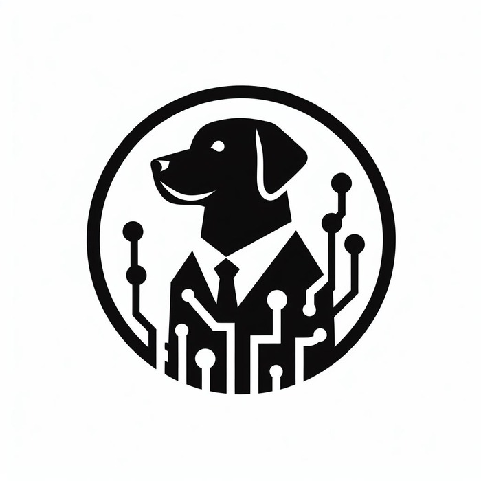

NeraTech, LLC · Independent advisory
NeraTech is my independent AI and technology advisory practice — helping organizations turn emerging technology into dependable, ROI-driven results. The same reliability-first discipline behind my book and patent, brought to your toughest problems.

What we do
A boutique practice with the rigor of a regulated industry: I help leaders adopt AI and modern technology in a way that is measurable, governable, and built to last.
Set an AI and data strategy tied to real business value, and build the governance, reliability, and guardrails that let you deploy it with confidence — not just in a demo, but in production.
Design and build custom LLM, agentic, and RAG systems, intelligent automation, and edge-AI — fit to your workflows and engineered around the C.A.R.E.S. reliability framework.
Turn data into decisions with predictive modeling, simulation, and analytics — and prove the return before you invest, with a defensible ROI model leaders can stand behind.
Coach executives and teams through adoption roadmaps, technology due diligence, and change management, translating between the boardroom and the engineering floor.
The approach
NeraTech brings the discipline I learned in nuclear energy, FDA-regulated manufacturing, and Shingo Prize operations to AI and digital transformation. Technology only creates value when it is disciplined, measurable, and dependable — so every engagement is built around that standard, from the first strategy session to the system running in production.
Whether you need a strategy, a working system, or an honest second opinion on an AI investment, the goal is the same: innovation you can actually depend on.